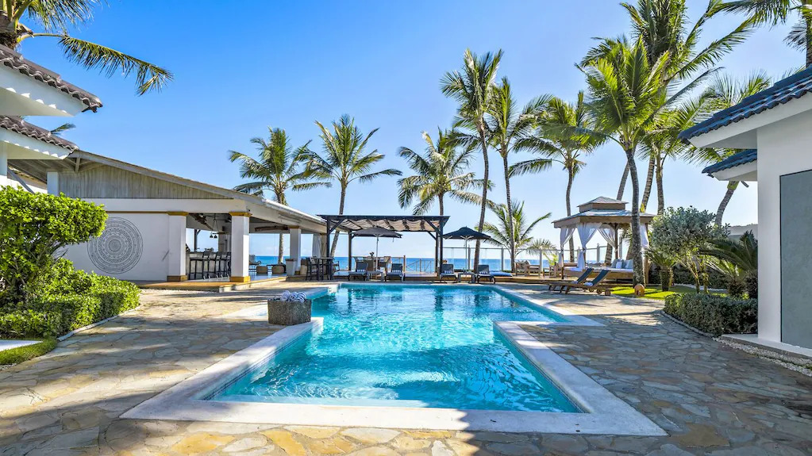
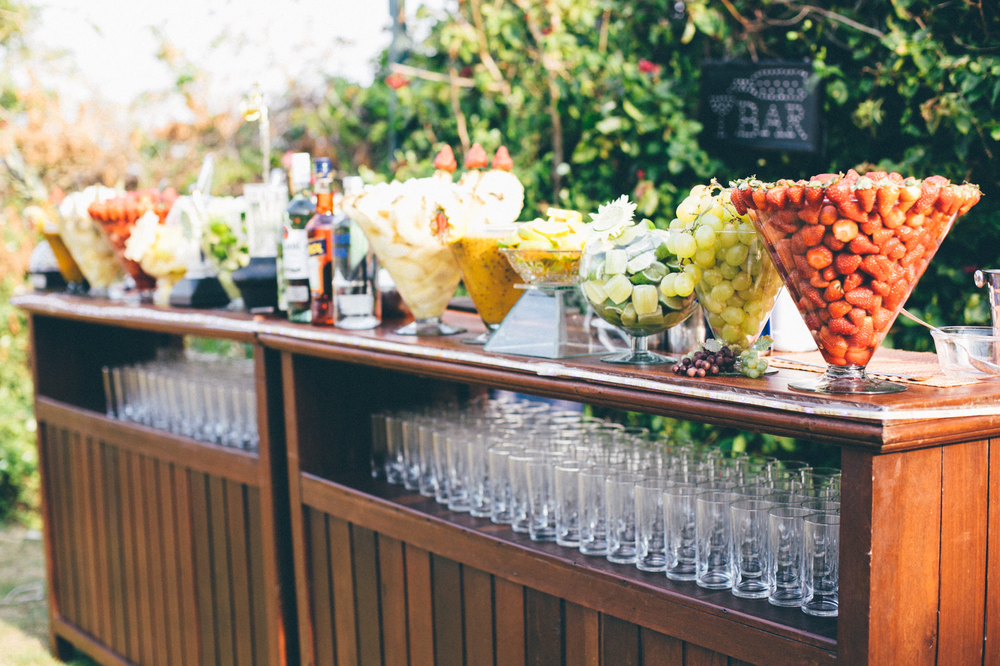
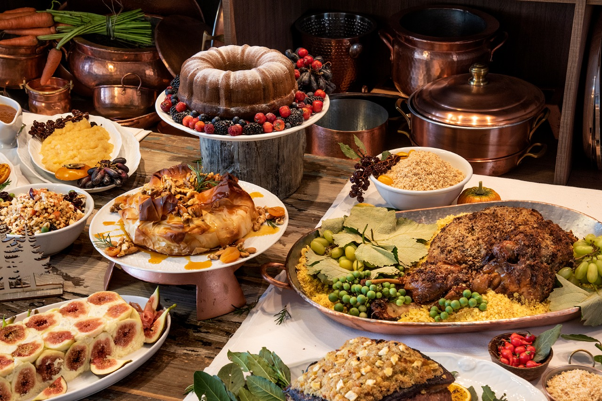

Uma noite exclusiva na Villa Azul, espaço de eventos localizado na Rua das Estrelas, 42 — Jardins, São Paulo. Com arquitetura moderna e iluminação cênica, o salão foi pensado para reunir as pessoas mais especiais em um ambiente elegante e intimista, perfeito para celebrar grandes momentos.
A celebração começa às 20h com coquetel de boas-vindas e exposição de fotografias. À meia-noite, o grande brinde corta o bolo ao som ao vivo. A noite segue com pista de dança aberta, surpresas especiais e encerra com queima de fogos às 2h. Uma sequência de momentos feita para ficar na memória de todos.

A trilha sonora da noite fica por conta do DJ Kael, referência em sets que transitam entre eletrônica, pop e flashback. A pista promete não parar — do início ao fim, cada faixa foi escolhida para criar a atmosfera certa em cada momento da celebração. Prepare o seu outfit e venha dançar.
O cardápio foi assinado pelo chef Bruno Valente e inclui estações de frios, canapés gourmet, mini burgers trufados e sobremesas artesanais. Para beber, open bar com drinques autorais, vinhos selecionados e opções sem álcool. Um banquete à altura da ocasião, para cada paladar e para cada brinde desta noite única.
